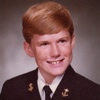

Quit your day job.
Start is a one-day conference in San Francisco designed for smart, talented Web people to take hold of their ideas, follow their dreams, and start their own companies.
You’ll hear from founders of successful startups, and learn from investors, lawyers, and others who can outline potential pitfalls. They'll give you practical advice, tell their horror stories, and maybe lend you a little inspiration. If you've ever dreamt of taking the plunge, don't miss this chance to hear from the experts!
What you’ll learn
- Where to start. Hear how founders got started, where they screwed up, and why they kept going.
- What you need. Hiring? Firing?!? Who’s watching the books? Do you really need a lawyer?
- How to pitch. Hear some of the web’s most formidable entrepreneurs giving their best five-minute pitches. Then learn to hone yours.
The day’s events
- Morning sessions Jeff and Bryan interview a great group of people who have started their own companies, and lived to tell. No mind-numbing slide presentations while you're still waking up — you’ll be engaged in conversation. Just sit down with the folks who created the web apps you love, and ask them whatever you want.
- Lunch on the bay The conference is literally over the water, with stunning views of Alcatraz and the Golden Gate Bridge. We’ll give you a lunch and you can enjoy the view with your friends.
- After lunch Here’s where we talk about business building blocks — the first, crucial steps in starting your company. We’re pulling together short conversations with investors, lawyers, accountants — even an HR specialist. These are people whose knowledge we respect, but also people who engage us, even when they’re talking about taxes.
- Afternoon It's tough to attract employees, and investors, if you can’t explain what you’re doing. To help you, we found one of the best coaches in the business to give you advice on pitching your idea. Then, you’ll hear some of the best pitchers we know, and we’ll critique them. This could come to blows.
- Start party! Stop musing and start networking. Spend your evening talking to all the other talented people here to start something new. We’ll provide the drinks and a DJ as the sun sets behind the Golden Gate.
When? Where?
August 7, 2008

Start! A Conference for Entrepreneurs
Cowell Theater, Fort Mason San Francisco, CA
Cowell Theater is a wheelchair accessible facility.


Who's responsible?
-

Designer, Author, and Entrepreneur
Jeffrey Veen
Jeffrey Veen recently left his position as User Experience Manager at Google to start something new. Before that, he founded Measure Map a blog analytics tool that Google acquired, as well as Adaptive Path — a user experience consulting group in San Francisco. He is a frequent speaker and the author of two books on web design.
-

COO, Adaptive Path
Bryan Mason
Bryan Mason is the Chief Operating Officer at Adaptive Path, where he's responsible for managing the company's business operations. Over the past ten years, Bryan has managed smart people in all kinds of settings, including the 2002 Salt Lake City Olympics, The White House, CMP Media Inc., the Lincoln Center Theater, and Blogger.

Who's speaking?
-
Founder, Blogger and Twitter
Evan Williams
Evan Williams is an American entrepreneur, originally a farm boy from Nebraska, who's been very lucky in business and life. He has founded Blogger, Odeo, and Twitter.
-
Founder, WordPress
Matt Mullenweg
Matt is the founding developer of the open-source blogging software WordPress and writes a popular blog called PhotoMatt. After quitting his job at CNET, he has developed a number of open source projects and is a frequent speaker at conferences. In late 2005, he founded Automattic, the business behind WordPress.com and Akismet.
-
43 Folders
Merlin Mann
Merlin Mann is the creator and primary contributor for 43folders.com, a family of websites about personal productivity, ‘life hacks,’ and simple ways to make your life a little better. He does what he does on a Mac in the western third of San Francisco.
 -
Founder, Six Apart
Mena Trott
Mena Trott is a co-founder and President of Six Apart, creator of Movable Type and TypePad. She helps lead management and business efforts, and makes the company products aesthetically pleasing and functionally intuitive.
-
Giga Om
Om Malik
Om is a senior writer for Business 2.0 magazine in San Francisco and founder of the very popular blog GigaOm.com, where he ruminates about broadband and its impact on our lives. As a technology journalist and a brief tenure as a venture capitalist, he has witnessed and documented firsthand the rise and fall of the Internet and telecom industries.
-
Founder, 30boxes and Webshots
Julie Davidson
Julie served time at Merril Lynch, Goldman Sachs, and Lazard Frerès before heading West during the Internet boom. As CFO/COO of the photo-sharing pioneer, Webshots, she built the business to $15M in revenue and a subsequent sale to CNET Networks, Inc. in 2004. She is now Co-Founder of the technology incubator 83 Degrees which has several projects including the critically acclaimed 30 Boxes.
-
Founder, 30boxes and Webshots
Narendra Rocherolle
Narendra has been building consumer web applications and businesses for 140,441 hours. He served as a core engineer, product designer, and later CEO of Webshots. Currently, Narendra and his partners run the technology incubator 83 Degrees where he enjoys experimenting with new social applications and design forms.
-
Chief People Officer, Room to Read
Lori McLeese
Lori McLeese is the Chief People Officer for Room to Read, a non-profit organization based in San Francisco that builds educational infrastructure in developing countries in Asia and Africa. She has over fifteen years of Human Resources experience with companies such as Oracle, CMP Media, and Mervyns.
We've got a lot more speakers to announce. Check back soon.